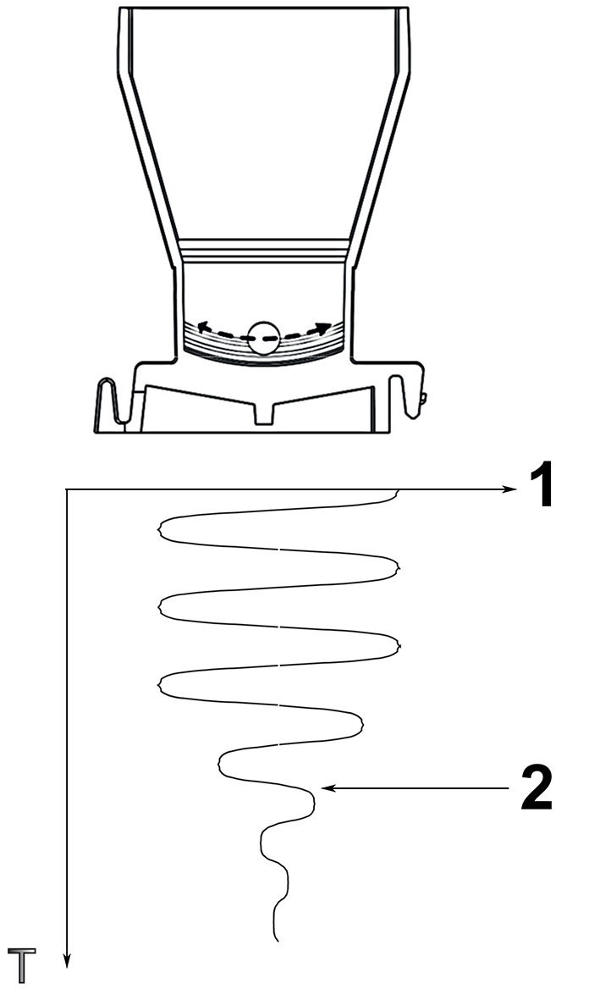

Petite bille métallique placée au fond de la cuvette pour différentes méthodes de mesure ; dans l'exemple ci-dessous, la chronométrie.
Le principe de mesure en chronométrie consiste à mesurer les variations d'amplitude d'oscillation de la bille grâce à des capteurs électromagnétiques.
Amplitude d’oscillation de la bille lors de la coagulation
|
 |
1. Amplitude d'oscillation de la bille
2. Détection de la coagulation